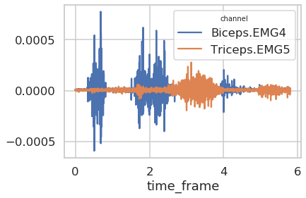
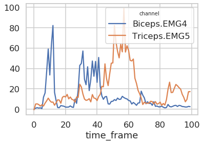
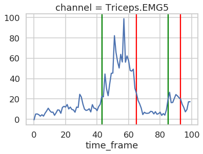

Getting Started
import motion import xarray xarray.set_options(display_style="html") import matplotlib.pyplot as plt import seaborn as sns sns.set(context="talk", style="whitegrid") sns.set_context() from pathlib import Path %load_ext lab_black
data_path = Path("../tests/data/markers_analogs.c3d")
data = motion.read_analogs_c3d(data_path) data
xarray.DataArray
- channel: 38
- time_frame: 11600
- -0.02205 -0.01992 -0.01992 -0.02198 -0.02198 ... 0.0 0.0 0.0 0.0 0.0
array([[-0.02205157, -0.01991534, -0.01991534, ..., -0.02311969, -0.02311969, 0. ], [-0.01039797, -0.01024538, -0.01024538, ..., -0.01207644, -0.01207644, 0. ], [-0.01544412, -0.01437601, -0.01437601, ..., -0.01399454, -0.01399454, 0. ], ..., [ 0. , 0. , 0. , ..., 0. , 0. , 0. ], [ 0. , 0. , 0. , ..., 0. , 0. , 0. ], [ 0. , 0. , 0. , ..., 0. , 0. , 0. ]]) - channel(channel)<U14'Voltage.1' 'Voltage.2' ... 'EMG9'
array(['Voltage.1', 'Voltage.2', 'Voltage.3', 'Voltage.4', 'Voltage.5', 'Voltage.6', 'Delt_ant.EMG1', 'Infra.EMG10', 'Subscap.EMG11', '12.EMG12', '13.EMG13', '14.EMG14', '15.EMG15', '16.EMG16', 'Delt_med.EMG2', 'Delt_post.EMG3', 'Biceps.EMG4', 'Triceps.EMG5', 'Trap_sup.EMG6', 'Trap_inf.EMG7', 'Gd_dent.EMG8', 'Supra.EMG9', 'EMG1', 'EMG10', 'EMG11', 'EMG12', 'EMG13', 'EMG14', 'EMG15', 'EMG16', 'EMG2', 'EMG3', 'EMG4', 'EMG5', 'EMG6', 'EMG7', 'EMG8', 'EMG9'], dtype='<U14') - time_frame(time_frame)float640.0 0.0005 0.001 ... 5.799 5.8
array([0.0000e+00, 5.0000e-04, 1.0000e-03, ..., 5.7985e+00, 5.7990e+00, 5.7995e+00])
- first_frame :
- 0
- last_frame :
- 11580
- rate :
- 2000.0
- unit :
- V
muscles = ["Biceps.EMG4", "Triceps.EMG5"] emg = data.sel(channel=muscles) emg.plot.line(x="time_frame") plt.show()

emg_processed = ( emg.meca.band_pass(freq=emg.rate, order=4, cutoff=[10, 425]) .meca.center() .meca.abs() .meca.low_pass(freq=emg.rate, order=4, cutoff=10) .meca.normalize() .meca.time_normalize(norm_time_frame=True) ) emg_processed.plot.line(x="time_frame") plt.show()

x = emg_processed.sel(channel="Triceps.EMG5") idx = x.meca.detect_onset(threshold=x.mean(), n_above=5, n_below=5) for i in idx: plt.axvline(x=i[0], c="green") plt.axvline(x=i[1], c="red") x.plot.line(x="time_frame") plt.show()
